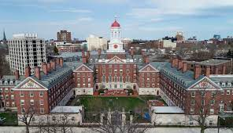
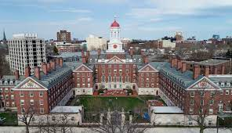

About Us
Django Re-Chained Slave Training School is widely recognized as an esteemed institution, renowned for its commitment to excellence in education. When you entrust your children to our school, rest assured that they will experience an unparalleled educational journey. One of the distinctive features of our institution is the exceptional accommodation we provide for our students. We believe in offering an environment that promotes comfort and fosters optimal learning experiences. Our non-URBAN students are privileged to reside in luxurious rooms within a five-star hotel, specially designated to ensure their utmost satisfaction and tranquility. In contrast, our URBAN students are provided with separate rooms located in the secure basement of our esteemed premises. Although the location may differ, we uphold the same high standards of care and attention for all our students. In this dedicated space, we accommodate our URBAN students with well-designed facilities, including 50 cozy bunk beds. Should the need arise, these students may have the opportunity to share their living space, encouraging camaraderie and community building. At Django Re-Chained Slave Training School, we recognize that a nurturing and conducive environment goes hand in hand with academic excellence. Our dedicated faculty and staff are committed to providing a comprehensive and well-rounded education for all our students, regardless of their background. Our curriculum is meticulously crafted to encourage critical thinking, creativity, and intellectual growth. Moreover, we offer a wide range of courses to cater to the diverse interests and aptitudes of our students. From Mathematics and Science to History and English, our curriculum ensures a robust foundation in core subjects. Additionally, we pride ourselves on offering unique opportunities such as the Disciplinary Class, which focuses on character development and personal growth exclusively for our URBAN students. Furthermore, we provide specialized subjects like Whip Cracking to cultivate skills and talents beyond traditional academics.

Our Diverse and Advanced Course Offerings
- Advanced Mathematics: Delve deeper into advanced mathematical concepts, including calculus, statistics, and mathematical modeling, to cultivate analytical thinking and problem-solving abilities.
- Physics: Explore the fundamental principles of the physical world, including mechanics, electricity, and optics, through hands-on experiments and theoretical exploration.
- Biology: Investigate the intricate systems of life, from cellular structures to ecological interactions, and develop a comprehensive understanding of the living world.
- Computer Science: Immerse yourself in the world of coding, algorithms, and software development, acquiring practical skills that are in high demand in today's technology-driven society.
- Chemistry: Discover the fascinating realm of chemical reactions, molecular structures, and laboratory techniques, fostering an understanding of the composition and behavior of matter.
- Literature and Writing: Engage with classic and contemporary works of literature, analyze diverse literary forms, and refine your writing skills through critical analysis and creative expression.
- Foreign Languages: Expand your global perspective and communication skills by studying languages such as French, Spanish, Mandarin, or German, immersing yourself in diverse cultures and traditions.
- Economics and Business Studies: Gain insights into economic theories, financial management, and entrepreneurship, preparing
- Disciplinary Class (URBAN STUDENTS ONLY): Engage in a specialized program designed to promote character development, ethical decision-making, and personal growth.
- History: Dive into captivating historical narratives, unravel the complexities of the past, and gain a deeper understanding of our world's heritage.
- English: Enhance your communication skills, foster critical thinking, and develop a love for literature through immersive language arts instruction.
- Whip Cracking (NO URBAN STUDENTS): Acquire a unique skill set in the art of whip cracking, honing coordination, focus, and discipline in this specialized course.
Extra Curricular Activities
- Athletics Club: Engage in various sports activities and competitions, promoting physical fitness, teamwork, and sportsmanship.
- Drama Club: Unleash your creativity through acting, stage production, and theatrical performances, developing self-expression and confidence.
- Cotton Picking (URBAN STUDENTS ONLY): Participate in a unique cultural experience that highlights the historical significance of cotton picking while promoting teamwork and appreciation for cultural heritage.
- Chess Club: Sharpen your strategic thinking and problem-solving skills through chess matches, tournaments, and the exploration of different chess strategies.
- Art Club: Unleash your artistic talents through various forms of visual arts, including painting, drawing, sculpture, and mixed media, fostering creativity and self-expression.
- Music Band: Join a dynamic musical ensemble where you can learn to play instruments, collaborate with fellow musicians, and perform at school events, cultivating musical skills and teamwork.
Sports
- Golf: Develop precision and focus while enjoying the sport of golf, refining your swing and mastering the art of the game.
- Tennis: Improve your agility, hand-eye coordination, and strategic thinking through the exciting game of tennis, competing in friendly matches and tournaments.
- Basketball (URBAN STUDENTS ONLY): Engage in fast-paced, dynamic basketball games, honing your dribbling, shooting, and teamwork skills on the court.
- Cricket: Embrace the sport of cricket, mastering the techniques of batting, bowling, and fielding while experiencing the thrill of competitive matches.
- Boxing: Discover the discipline, physical fitness, and self-defense techniques involved in the sport of boxing, developing strength, agility, and confidence.
- Gymnastics: Explore the world of flexibility, balance, and grace through gymnastics, learning various gymnastic routines and building strength and coordination.
- Table Tennis: Engage in thrilling table tennis matches, sharpening your reflexes, hand-eye coordination, and strategic thinking skills.
- Volleyball: Participate in exciting volleyball games, improving your teamwork, communication, and agility on the court.
- Soccer: Join the exhilarating world of soccer, developing your skills in passing, dribbling, and scoring goals while fostering teamwork and sportsmanship.
Check out the School basketball team page.
Contact Us
Email: DjangoRe-Chained@gmail.com
Phone: 511-911-2001